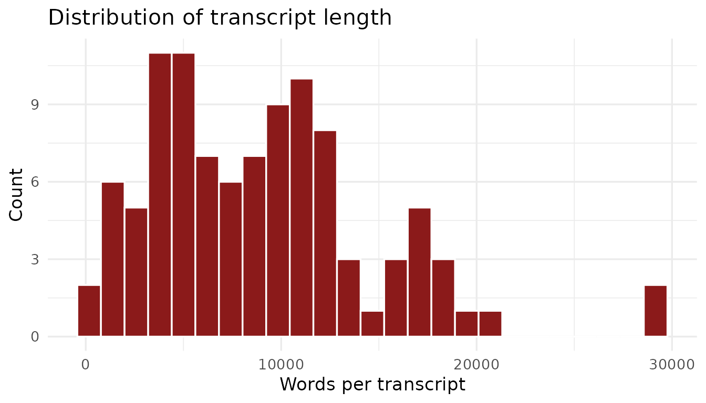
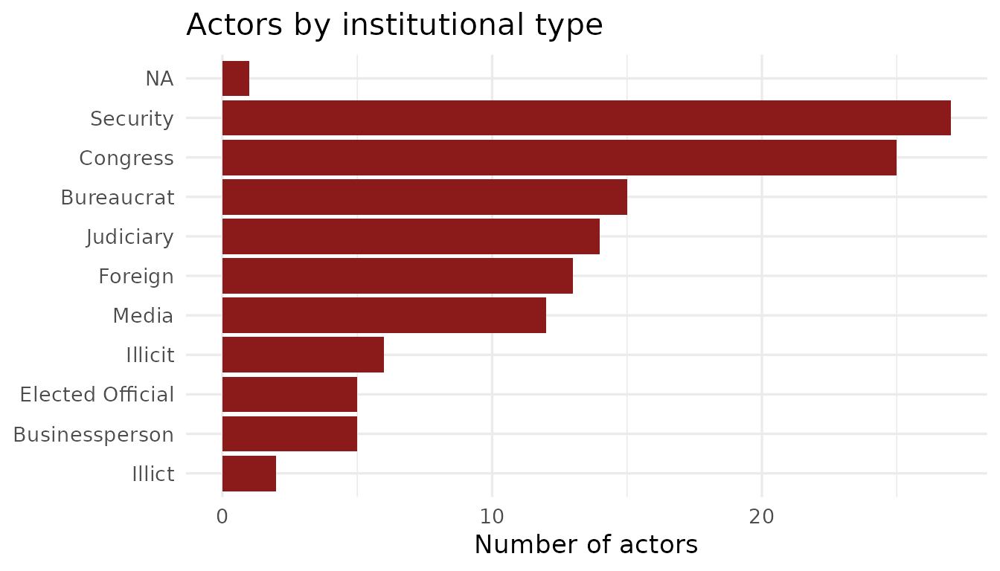
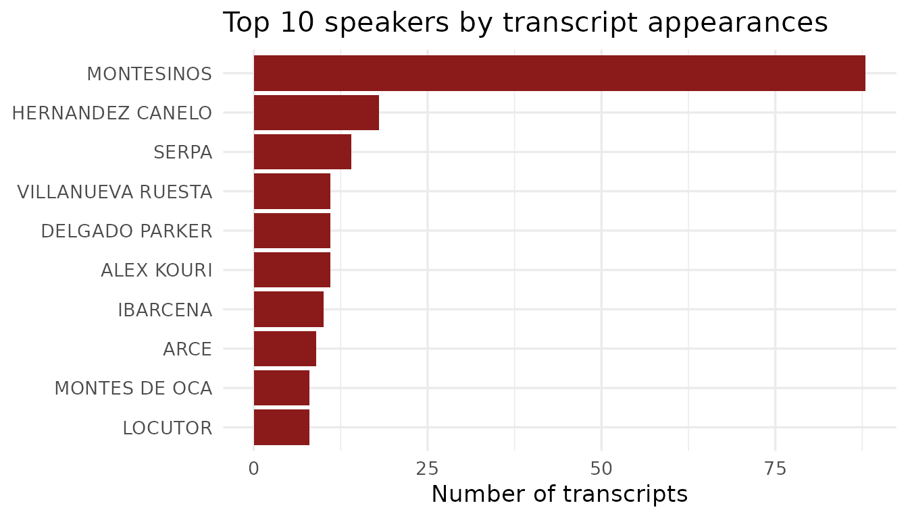
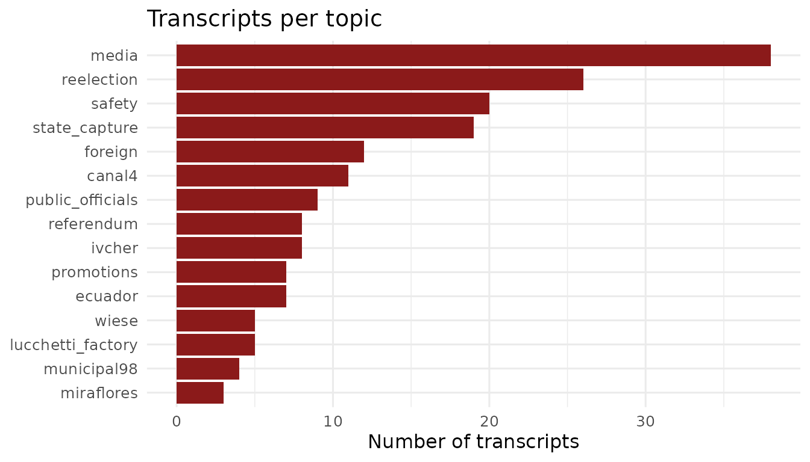

The Vladivideos
Between 1990 and 2000, Vladimiro Montesinos Torres — Peru’s de facto intelligence chief under President Alberto Fujimori — secretly recorded thousands of meetings in which he bribed politicians, judges, military officers, media executives, and businesspeople. When the recordings were leaked and broadcast publicly in September 2000, they triggered the collapse of the Fujimori government and became one of the most extensively documented cases of systemic corruption in Latin American history.
The videos capture corruption across every major institution of the Peruvian state: legislators accepting cash to switch party allegiances, television channel owners receiving monthly payments to control news coverage, military generals coordinating electoral fraud, and judges confirming their availability to rule in Montesinos’s favor.
{BribeR} provides structured access to transcripts of 101 of these recordings, along with metadata on the speakers involved and the topics discussed.
Transcripts
library(BribeR)
library(dplyr)
library(ggplot2)
meta <- read_transcript_meta_data()
nrow(meta)
#> [1] 104The corpus spans recordings made between 1996 and 2000, covering the period from Fujimori’s successful bid for a controversial third term through the final months before the regime’s collapse.
summary(meta$n_words)
#> Min. 1st Qu. Median Mean 3rd Qu. Max. NAs
#> 175 4544 8547 8946 11721 29161 3Transcripts range from brief exchanges of a few hundred words to lengthy multi-hour meetings exceeding 18,000 words. The median transcript is approximately 2,500 words.
ggplot(meta, aes(x = n_words)) +
geom_histogram(bins = 25, fill = "#8B1A1A", color = "white") +
labs(
title = "Distribution of transcript length",
x = "Words per transcript",
y = "Count"
) +
theme_minimal(base_size = 13)
#> Warning: Removed 3 rows containing non-finite outside the scale range
#> (`stat_bin()`).
Actors
The corpus involves 125 named individuals. Each actor in the
actors dataset is classified by institutional type:
actors |>
count(Type, sort = TRUE)
#> # A tibble: 11 × 2
#> Type n
#> <chr> <int>
#> 1 Security 27
#> 2 Congress 25
#> 3 Bureaucrat 15
#> 4 Judiciary 14
#> 5 Foreign 13
#> 6 Media 12
#> 7 Illicit 6
#> 8 Businessperson 5
#> 9 Elected Official 5
#> 10 Illict 2
#> 11 NA 1Security forces (military and police) and Congress form the two largest groups, reflecting Montesinos’s priorities: controlling the armed forces and ensuring a legislative majority for Fujimori’s agenda.
actors |>
count(Type, sort = TRUE) |>
ggplot(aes(x = reorder(Type, n), y = n)) +
geom_col(fill = "#8B1A1A") +
coord_flip() +
labs(
title = "Actors by institutional type",
x = NULL,
y = "Number of actors"
) +
theme_minimal(base_size = 13)
Speaker Frequency
Montesinos appears in 98 of the 101 transcripts — he is the constant throughout the corpus, present in nearly every recorded meeting.
speakers <- get_transcript_speakers()
speakers |>
mutate(n_transcripts = lengths(transcripts)) |>
arrange(desc(n_transcripts)) |>
head(10)
#> # A tibble: 10 × 3
#> speaker_std transcripts n_transcripts
#> <chr> <list> <int>
#> 1 MONTESINOS <dbl [88]> 88
#> 2 HERNANDEZ CANELO <dbl [18]> 18
#> 3 SERPA <dbl [14]> 14
#> 4 ALEX KOURI <dbl [11]> 11
#> 5 DELGADO PARKER <dbl [11]> 11
#> 6 VILLANUEVA RUESTA <dbl [11]> 11
#> 7 IBARCENA <dbl [10]> 10
#> 8 ARCE <dbl [9]> 9
#> 9 LOCUTOR <dbl [8]> 8
#> 10 MONTES DE OCA <dbl [8]> 8
speakers |>
mutate(n_transcripts = lengths(transcripts)) |>
arrange(desc(n_transcripts)) |>
head(10) |>
ggplot(aes(x = reorder(speaker_std, n_transcripts), y = n_transcripts)) +
geom_col(fill = "#8B1A1A") +
coord_flip() +
labs(
title = "Top 10 speakers by transcript appearances",
x = NULL,
y = "Number of transcripts"
) +
theme_minimal(base_size = 13)
Topics
Each transcript is tagged with one or more thematic topics. The 15 topics reflect the main areas of Montesinos’s corrupt activity:
| Topic | Description |
|---|---|
state_capture |
Systematic co-optation of state institutions |
reelection |
Planning and executing Fujimori’s 2000 reelection campaign |
media |
Payments to television channels and newspapers |
promotions |
Military and police promotions in exchange for loyalty |
foreign |
Foreign policy and international relations |
ivcher |
The case of Baruch Ivcher, a media owner stripped of citizenship |
canal4 |
Dealings with Canal 4 (RBC Televisión) |
safety |
Internal security and anti-opposition operations |
wiese |
The Wiese banking group |
lucchetti_factory |
The Lucchetti factory zoning controversy |
ecuador |
The 1995 border conflict with Ecuador |
referendum |
The 1993 constitutional referendum |
municipal98 |
Lima’s 1998 municipal elections |
miraflores |
The Miraflores district municipality |
public_officials |
Interactions with civil servants and bureaucrats |
topic_names <- c(
"state_capture", "reelection", "media", "promotions", "foreign",
"ivcher", "canal4", "safety", "wiese", "lucchetti_factory",
"ecuador", "referendum", "municipal98", "miraflores", "public_officials"
)
topic_counts <- sapply(topic_names, function(t) {
length(get_transcript_id(topic = t))
})
data.frame(topic = topic_names, n = topic_counts) |>
ggplot(aes(x = reorder(topic, n), y = n)) +
geom_col(fill = "#8B1A1A") +
coord_flip() +
labs(
title = "Transcripts per topic",
x = NULL,
y = "Number of transcripts"
) +
theme_minimal(base_size = 12)
State capture — the coordinated takeover of multiple institutions — is the most common topic tag. Many transcripts are tagged with multiple topics: a single meeting might involve media payments, legislative maneuvering, and electoral fraud simultaneously.
Data Structure at a Glance
The full compiled corpus contains 47,375 speech turns across the 101 transcripts:
transcripts <- read_transcripts()
nrow(transcripts)
#> [1] 47375
names(transcripts)
#> [1] "n" "row_id" "date" "speaker" "speech"
#> [6] "speaker_std" "topic"Each row represents one turn in the conversation. The
speech column contains the original Spanish text;
speaker_std is a standardized uppercase surname identifier
that matches across the actors,
transcript_index, and speakers_per_transcript
datasets.
For a full description of all seven bundled datasets and their linking columns, see the Data Structure article.